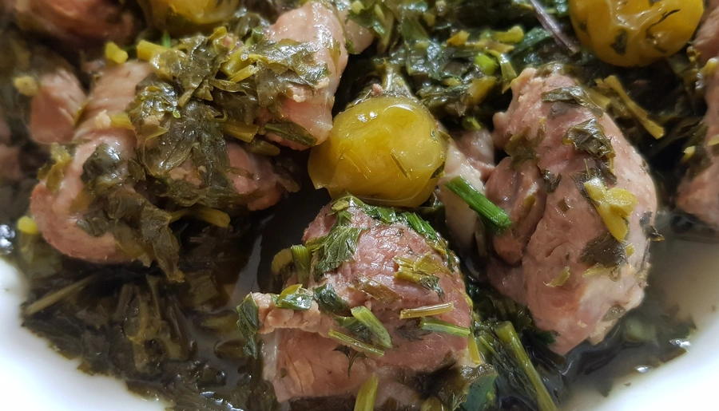

Chakapuli

Description
A lamb stew with herbs and wine is a dish that should be on the Georgian Easter table. Chakapuli is
traditionally
made with lamb, but you can also replace it with veal.
Ingredients
- 1,5 kg lamb
- 2 bunches Tarragon
- 1 bunch Coriander
- 1 bunch parsley
- 1 bunch scallions
- 100 g green sour plums (tkemali)
- 2 cloves garlic, minced
- 2 cup dry white wine
- salt to taste
Steps
- Cut a meat into small pieces and place it in the saucepan.
- Add sour plums, finely chopped herbs and garlic.
- Season with salt and pour white wine in it.
- Cover the pan and place it on a medium-low heat.
- Cook for about one hour, until the meat is tender.